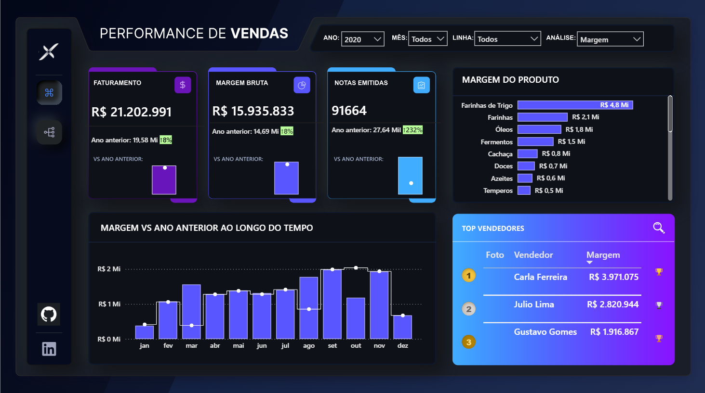
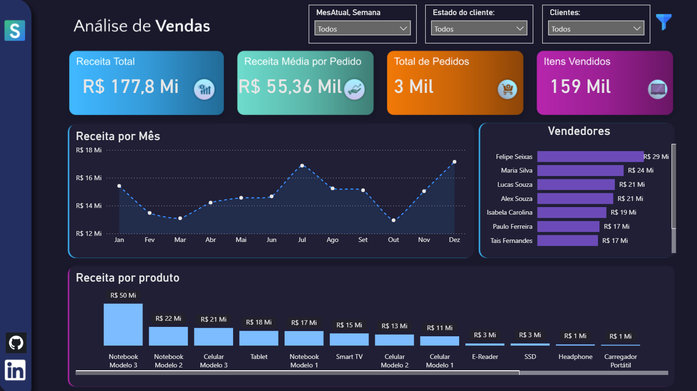
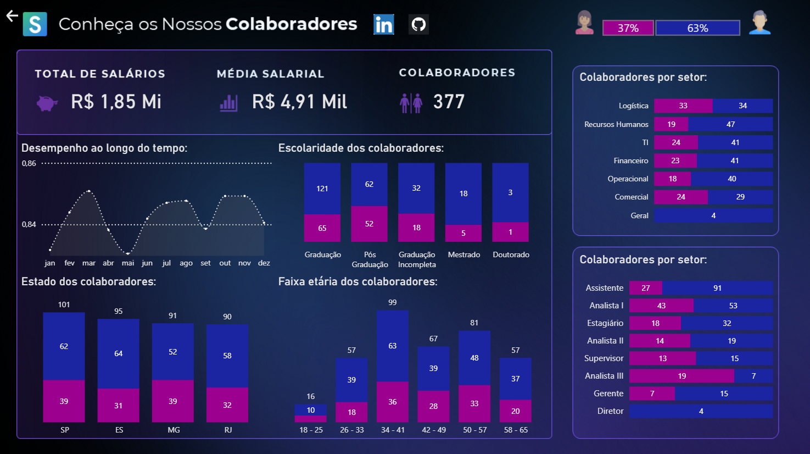

Dashboard Analítico
Estudos de Caso
Projetos de Business Intelligence e Análise de Dados
Esta seção apresenta uma coleção de dashboards desenvolvidos para transformar dados brutos de negócios em insights acionáveis, utilizando técnicas avançadas de visualização e modelagem robusta de dados.

Dashboard de Performance de Vendas
Analisa vendas por regiões, destacando tendências de receita e os melhores vendedores por meio de filtragem dinâmica e recursos de drill-down.

Dashboard de Performance Financeira
Monitoramento estratégico de KPIs financeiros, fluxo de caixa e alocação orçamentária para garantir crescimento sustentável e lucratividade entre departamentos.

Dashboard de Insights do Cliente
Análise aprofundada do comportamento do cliente, retenção e valor ao longo da vida (LTV) utilizando modelagem preditiva e análise histórica de coortes.
Dashboard de Performance Operacional
Monitoramento em tempo real da eficiência da cadeia de suprimentos e da vazão operacional, identificando gargalos e oportunidades de otimização.
Abordagem em Análise de Dados
A Filosofia
Dados sem contexto são apenas ruído. Minha abordagem foca em conectar a coleta bruta de dados à execução estratégica. Ao construir dashboards intuitivos e orientados por narrativa, transformamos conjuntos de dados complexos em uma história clara que guia os tomadores de decisão.
Decisões Estratégicas
Cada dashboard é projetado com o usuário final em mente, utilizando os melhores princípios de UI/UX para visualização de dados. Isso garante que até os KPIs mais complexos sejam compreensíveis, permitindo que as organizações sustentem decisões críticas com inteligência verificada em tempo real.